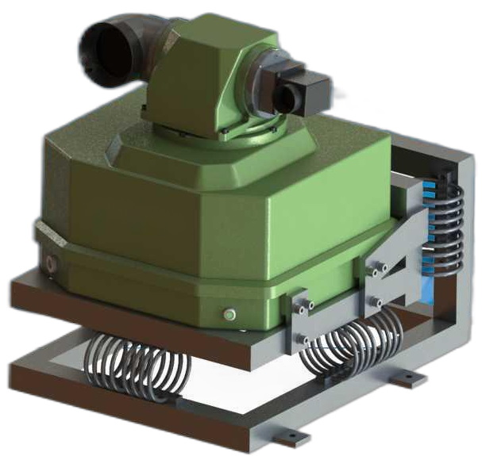

Solafact 5500
Product Introduction

SOLAFACT 5500 Passive Fourier Infrared Remote Sensing analyzer is based on passive Fourier infrared remote sensing analysis technology, which can conduct qualitative, quantitative, positioning and imaging analysis of toxic gases to be measured in the atmospheric environment from a long distance. The product uses the infrared spectrum fingerprint characteristic information generated by the equivalent radiation brightness temperature difference between the gas to be measured and the remote sensing background to achieve rapid and highly sensitive qualitative identification and semi-quantitative concentration inversion analysis of a variety of toxic and harmful gases; it can present toxic and harmful pollution in real time The dynamic distribution and diffusion trend of gas in the scanning area, and sound and light warning for excessive gas. The instrument can realize 360°, pitch and 90° rotation scanning, and the scanning monitoring radius is greater than 3 km.
Features
Powerful detection capabilities
Using high-performance and long-life Stirling-cooled MCT detector, the detection range reaches ppm-percentage.
Equipped with a precision optical scanning pan/tilt, horizontal 360° scanning, pitch ±90°, monitoring radius greater than 3km.
Has a high-speed and stable optical-mechanical hardware system that can achieve 4cm-¹/16 frames/second fast scanning.
Reliable environmental adaptability
Operating temperature: -20°C~55°C+Storage temperature: -40°C~65°C.
Protection level: IP65.
Anti-vibration adaptability: The instrument meets GJB150.16A-2009, meets the anti-vibration characteristics of general fasteners mounted on vehicles, ships, and airborne, and can perform measurements in vibration environments.
Extremely low maintenance costs
Exquisite structural design, simple installation and convenient operation.
Using Fourier transform infrared spectroscopy detection technology, long-distance non-contact sampling.
No consumables, no radioactive sources, no secondary pollution, and extremely low maintenance costs.
Advanced Software Algorithms
Meets the requirements for detection and identification of hundreds of industrial compounds (TICs) and chemical warfare agents (CWAs)
It has multiple mixture detection capabilities and can detect and identify at least 6 mixtures of gas substances.
No external excitation light source is required, detection and identification can also be performed in complex dark environment backgrounds.
Optimized algorithms for instrument self-inspection, self-calibration, path interference diagnosis, water vapor compensation, etc.
Rich product features
Equipped with a multi-functional monitoring terminal to meet user needs such as daily environmental monitoring, threat identification, sound and light alarm, information storage and playback, etc., and the functions support customization.
Product functions support customization, the system can be loaded on mobile carriers such as vehicles, ships, helicopters, drones, etc., and perform tasks on the move.
Technical Specifications
Performance Parameters
600 cm-1~1500cm-1
396mm (length)x360mm (width)x382mm (height)
Parameter Name
Spectral range
Dimensions
Regular 4cm-1, maximum 1cm-1
Host weight
<30kg, shock absorbing bracket <10kg
Spectral resolution
Detector
Using domestic MCT mercury cadmium telluride detector (lifetime >12000h)
Beam splitter
Domestic moisture-proof ZnSe beam splitter
Detection distance
>3km
Monitoring scope
Pan 360°, pitch ±90°
Calibrate blackbody
Adopting high-performance high and low temperature (ambient temperature -30°C~150°C) blackbody
Test type
More than 430 measurable substances
Instrument detection limit
50ppm·m (2 degrees temperature difference) @ ammonia or ethylene
Spectral acquisition rate
Normally 10 times/second
Telescope
Using military-grade 2x off-axis telescope
Using military-grade 2x off-axis telescope
-20°C~55°C
Protection level
IP65
Mixture testing
Able to achieve real-time online early warning monitoring of more than 3 mixtures
Anti-vibration and impact characteristics
Meets the GJB 150A-2009 crawler vehicle vibration program | impact program | early warning monitoring during environmental operation, and also meets the heavy oil UAV anti-vibration test long-distance remote sensing test
Application Area
Passive Fourier infrared remote sensing analyzers can be widely used in national defense, emergency, anti-terrorism, environmental monitoring, fire protection, petroleum, chemical industry parks, emergency detection of sudden chemical accidents, large-scale event security, long-distance detection of gas leaks, and long-distance air pollution Analysis, industrial production pollutant emission monitoring and other fields.